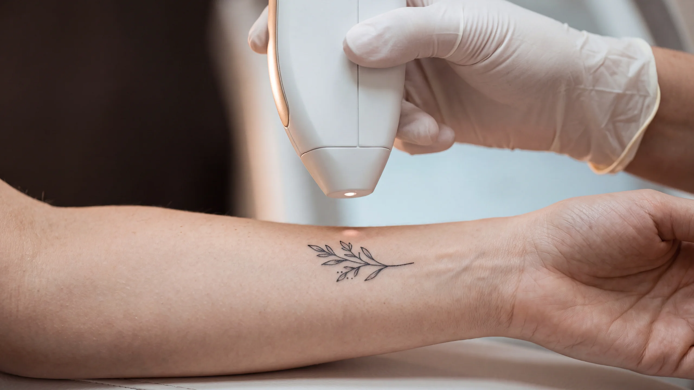

Araç · Dövme silme
Dövme silme kaç seans sürer?
Dövme silme kaç seans sürer sorusunun tek bir cevabı yok: cilt tonu, dövmenin yeri, renkleri, mürekkebin yoğunluğu, varsa iz dokusu ve kapatma dövmesi sayıyı değiştirir. Sekiz kısa soruyu yanıtlayın; yayımlanmış bir ölçeğe göre tahmini seans aralığınızı, seanslar arasındaki bekleme süresini ve sizi neyin beklediğini görün. Fotoğraf istemez, yanıtlar cihazınızdan çıkmaz.

Temsilî görsel · yapay zekâ ile üretildiDövmenizi tarif edin, yol haritanız çıksın
Sorular dövme silmede seans sayısını tahmin etmek için yayımlanmış bir ölçeğin altı ölçütünü izler. Sonuç bir aralıktır; dövmenizin lazere ilk yanıtını görmeden kesin sayı verilemez.
- Cilt tonu
- Bölge
- Renk
- Mürekkep
- İz
- Kapatma
- Bir dövme
- Kalıcı makyaj (kaş, dudak çevresi ya da göz kenarı)
Yazın güneşe korunmasız çıktığınız ilk günleri düşünün.
- Çok açık: hep yanarım, hiç bronzlaşmam
- Açık: kolay yanarım, zor bronzlaşırım
- Buğday: bazen yanarım, yavaş yavaş bronzlaşırım
- Esmer: nadiren yanarım, kolay bronzlaşırım
- Koyu esmer: çok nadir yanarım
- Çok koyu: hiç yanmam
Dolaşımın daha yavaş olduğu, kalpten uzak bölgelerde mürekkep kırıntıları daha yavaş taşınır.
- Baş, yüz ya da boyun
- Göğüs, sırtın üst kısmı ya da omuz
- Karın, belin alt kısmı ya da kalça
- Üst kol ya da uyluk
- Ön kol, el, alt bacak ya da ayak
- Yalnız siyah ya da koyu gri
- Çoğunlukla siyah, biraz kırmızı
- Siyah ve kırmızının yanında bir-iki renk daha
- Çok renkli; yeşil, mavi, sarı ya da beyaz da var
- Elle ya da ev koşullarında yapılmış (amatör)
- Profesyonel, ince çizgili ve az mürekkepli
- Profesyonel, gölgeli ve orta yoğunlukta
- Profesyonel, koyu boyanmış dolgun alanlar çok
- Yok, deri düz
- Hafif pürüz ya da kabarıklık
- Belirgin kabarıklık ya da doku farkı
- Yoğun iz; deri sertleşmiş ya da çekmiş
- Hayır
- Evet, kapatma dövmesi
- Hayır
- Evet
- Emin değilim
Koyu tende derinin kendi pigmenti de enerjiyi soğurur; daha temkinli ayarlarla çalışıldığı için dizi uzayabilir.
Ön kol, el, alt bacak ve ayakta mürekkep kırıntıları gövdeye göre daha yavaş taşınır.
Her renk farklı bir dalga boyuna yanıt verir; çok renkli dövmelerde bazı renkler geride kalabilir.
Koyu boyanmış ve katmanlı alanlarda ufalanması gereken mürekkep miktarı fazladır.
Dövme sırasında oluşmuş iz dokusu, enerjinin mürekkebe ulaşmasını güçleştirebilir.
Üst üste iki dövmede iki ayrı mürekkep katmanı bulunur; ikisinin de açılması zaman alır.
Yanıtlarınızda seans sayısını belirgin biçimde uzatan bir etken öne çıkmıyor; yine de dövmenin ilk seanslara verdiği yanıt tahmini değiştirebilir.
Hesap, dövme silmede seans sayısını öngörmek için yayımlanmış Kirby-Desai ölçeğine (2009) dayanır. Ölçek pikosaniye lazerlerden önceki teknolojiyle geliştirildi; gerçek sayı kişiden kişiye değişir ve çoğu zaman ilk iki seanstan sonra netleşir.
Tam silinme taahhüt edilmez; bazı dövmelerde silik bir gölge ya da ton farkı kalabilir. Kesin plan, dövmeniz muayenede görüldükten sonra yapılır.
Kaş, dudak ve göz kenarında kullanılan ten, kahve ve pembe tonların bir kısmı atımla griye ya da siyaha dönebilir. Bu yüzden önce küçük bir noktada deneme yapılır; göz kenarındaki uygulamalar ayrıca değerlendirilir.
Kırmızı mürekkep, yıllar sonra bile kaşıntı ya da kabarıklık yapabilen bir renktir. Dövmenizde böyle bir tepki olduysa muayenede anlatın.
Bu renkler lazere daha sınırlı yanıt verebilir; bazılarında belirgin açılma görülmeyebilir. Hangi rengin ne ölçüde açılacağı muayenede konuşulur.
Koyu tende açık ya da koyu leke kalma olasılığı daha yüksektir; seanslar daha düşük enerjiyle ve aralıklara uyularak planlanır.
Dövmedeki kabarıklık ya da iz muayenede ayrıca değerlendirilir; kabarık iz yapma eğiliminiz varsa bunu da belirtin.
Kapatma dövmesi açılırken alttaki eski desen yeniden belirebilir; bu, sürecin beklenen bir parçasıdır.
Yakın zamanda bronzlaşmış deride lazer seansı ertelenir; ten eski hâline dönene kadar beklenir ve bu sürede bölge güneşten korunur.
Sayıyı ne belirler?
Aynı büyüklükteki iki dövme neden farklı sürede açılır?
Lazer, mürekkebi derinin içinde ufalar; kırıntıları ise vücudun kendi temizlik sistemi haftalar içinde taşır. Bu iki işin hızını altı ölçüt belirler.
Cilt tonu
Açık tende enerji büyük ölçüde mürekkebe gider. Koyu tende derinin kendi pigmenti de enerjiyi paylaşır; güvenli kalmak için ayarlar düşürülür, dizi uzar.
Bölge
Yüz ve boyun gibi dolaşımı güçlü bölgelerde kırıntılar daha hızlı uzaklaşır. Ön kol, el ve ayakta aynı dövme daha fazla seansa ihtiyaç duyabilir.
Renk
Siyah, lazerin en kolay yakaladığı renktir. Kırmızı, yeşil, mavi ve sarı farklı dalga boyları ister; bazıları sınırlı açılır.
Mürekkep miktarı
Elle yapılmış dövmelerde mürekkep seyrektir. Makineyle koyu boyanmış dolgun alanlarda ufalanacak mürekkep çok daha fazladır.
İz dokusu
Dövme yapılırken oluşmuş kabarıklık ya da sertlik, enerjinin mürekkebe ulaşmasını zorlaştırır ve seans planını değiştirir.
Kapatma dövmesi
Eski bir dövmenin üzerine yapılan dövmede iki katman mürekkep vardır; açılırken alttaki desen yeniden görünür hâle gelebilir.
Dürüst bir not
Tahmin ne kadar güvenilir?
Bu araç, 2009'da dermatoloji literatüründe yayımlanan Kirby-Desai ölçeğini kullanır. Ölçek altı ölçüte puan verir; toplam, dövmenin kaç seansta açılabileceğine dair kaba bir öngörüdür. Biz toplam puanı göstermiyor, yalnızca ona karşılık gelen aralığı veriyoruz.
Ölçek, pikosaniye lazerlerden önceki cihazlarla yapılan seanslar üzerinden geliştirildi. Bu yüzden aralığı bir başlangıç noktası olarak görün: dövmenizin lazere gerçek yanıtı genellikle ilk iki seansta belli olur ve plan o zaman güncellenir.
Seanslar arasındaki altı ila sekiz haftalık bekleme, ufalanan mürekkebin taşınması ve derinin toparlanması içindir. Bu süreyi kısaltmak açılmayı hızlandırmaz, iz riskini artırabilir.
Sık gelen sorular
Yol haritası hakkında merak edilenler
Metni hazırlayan ve tıbbi açıdan gözden geçiren: Uzm. Dr. Rahmi Cebeci (Aile Hekimliği Uzmanı · Medikal Estetik Sertifikalı).
Buradaki anlatım herkese yöneliktir; size özel bir teşhis ya da tedavi planı sunmaz, muayenenin yerini tutmaz. Her uygulamanın etkisi kişiye göre farklı olur.